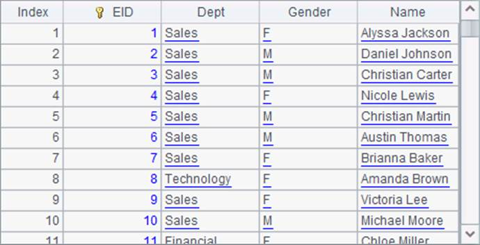
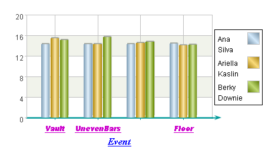

It is convenient to read statistical values on an axis by displaying tick marks and tick labels as needed. As the axis title, you can set font and style properties for tick labels. For example, modify again the preceding plotting algorithm by editing A4¡¯s code to change the properties of labels on the x-axis:

By re-setting the font, style and color of the a-axis labels, the plotting result becomes this:

As can be seen, the appearance of tick labels below the x-axis has changed accordingly. The ¡°BalanceBeam¡±, the third tick label, is omitted by default since it overlaps some parts of the other labels.
Among properties of labels, you can set Indent property to adjust the distance between the title text and tick labels, Rotation angle to change the tilting angle of the title text, Label step to display labels at regular intervals. By checking Allow text overlapping, label text will be plotted even though it might overlap others (By default labels will not overlap each other; a label will not be plotted if it will overlay an existing label, as the third label BalanceBeam in the above chart). Tick labels can be hidden by setting Allow labels as false.